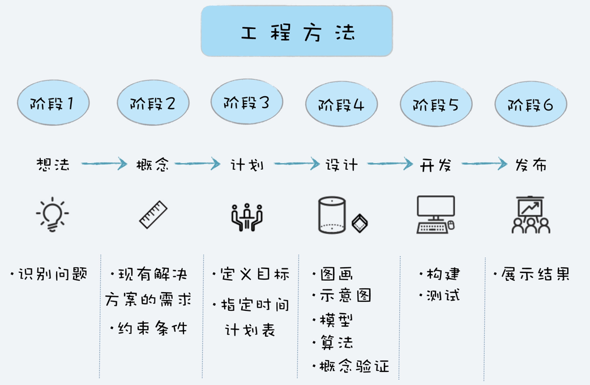
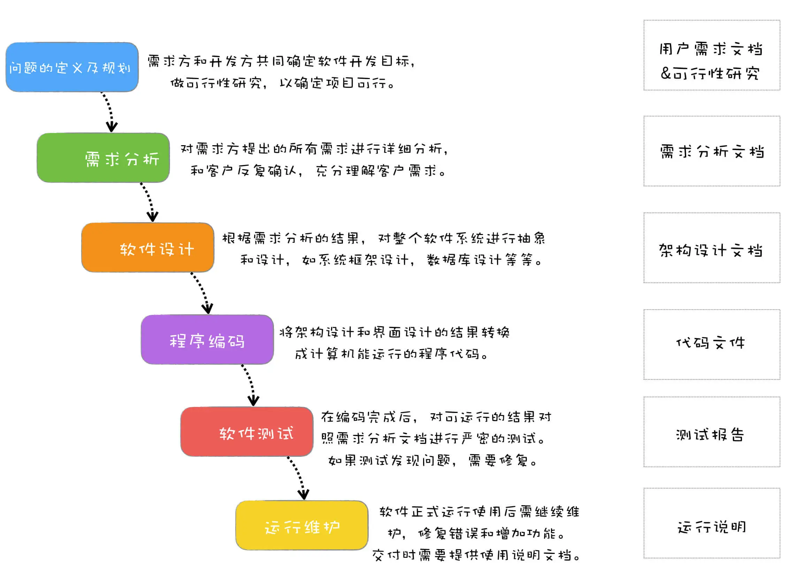

在确保可信的前提下，要在性能、功能、扩展性等方面做好权衡；慎重地定义我们的模块与接口，真正做到高内聚与低耦合；我们要遵循权限和攻击面最小化等安全设计原则，科学设计模块之间的隔离与接口，提升安全性；低阶架构与设计要遵循高阶的架构与设计原则，在充分理解原有架构与设计的情况下，持续优化；我们要熟悉各种设计模式，重用公共成熟组件和服务，避免重复劳动。
软件工程=工具+方法+过程
有人参与、人计划、有步骤地造一件产品，称为“工程”。
软件工程：将系统化的、规范的、可度量的方法用于软件的开发、运行和维护的过程，即将工程化应用于软件开发中。让项目可以按时完成、成本可控、质量有保证。
有目的、有计划、有步骤地解决问题的方法就是工程方法。好处是：
- 有一个被有效论证过的方法论指导你，可以帮助你提高成功概率，也可以提高效率。
- 当你用工程方法去思考的时候，你会更多的站在整体而非局部去思考，更有大局观。

如果能站在项目整体来看问题，你就会去关注项目的质量、进度、成本、最终用户，就会：
- 为了项目整体的效率和避免返工浪费，产品经理会及早和开发人员确认技术可行性，并对产品设计先行验证。
- 为了节约项目开发成本，提高开发效率，架构师选择成熟的架构，合理购买商业组件和使用开源程序。
- 为了提升开发效率，不影响项目开发进度，开发工程师尽可能采用成熟的技术，高效简洁地落实项目。
- 为了项目质量和效率，测试工程师学习自动化测试技术，将大部分测试变成自动化运行，极大地提高了测试效率和质量。
- 为了让用户有好的体验，不仅产品经理，每个人都会仔细检查用户界面，对于不合理的地方提出改进意见。
工程思维，本质上是一种思考问题的方式，在解决日常遇到的问题时，尝试从一个项目的角度去看待问题、尝试用工程方法去解决问题、站在一个整体而不是局部的角度去看问题。
瀑布模型

不管什么软件项目，不管采用什么开发模式，有四种活动是必不可少的，那就是需求、设计、编码和测试。而这四项活动都是起源于瀑布模型，也是瀑布模型中核心的部分。
瀑布优点：
- 简单易行
- 可以按照阶段检查，能及时发现问题
- 前一个阶段完成后，就可以重点关注下一个阶段
- 有很好的分工协作
- 对质量有保障
瀑布缺点：
- 难以响应需求的变更 ，当需求发生改变时，越到后期代价越大
- 工作量分布不均衡
- 前期进度受阻，会一直压缩后续阶段时间，导致延期或影响质量
- 一直到最后阶段才能看到结果
先迅速建造一个可以运行的软件原型，然后收集用户反馈，再反复修改确认，使开发出的软件能真正返回用户需求，这种开发模型就叫快速原型模型，也叫原型模型。
原型模型因为能快速修改，所以能快速对用户的反馈和变更作出响应，同时原型模型注重和客户的沟通，所以最终开发出来的软件能够真正反映用户的需求。但这种快速原型开发往往是以牺牲质量为代价的。两种处理策略：抛弃策略和附加策略。
小瀑布增量模型是把待开发的软件系统模块化，然后在每个小模块的开发过程中，应用一个小瀑布模型，对这个模块进行需求分析、设计、编码和测试。相对瀑布模型而言，增量模型周期更短，不需要一次性把整个软件产品交付给客户，而是分批次交付。
如果系统不能模块化，那么将很难采用增量模型的模式来开发。适用于需求比较清楚，能模块化的软件系统，并且可以按模块分批次交付。
迭代模型每次只设计和实现产品的一部分，然后逐步完成更多功能。每次设计和实现一个阶段叫做一个迭代。迭代结束时要完成一个可运行的交付版本。
增量模型是按照功能模块来拆分；而迭代模型则是按照时间来拆分，看单位时间内能完成多少功能。
迭代模型最难的部分，在于规划每次迭代的内容和要达到的目标。
该选择什么过程模型：
- 需要阶段验收的：V模型
- 风险高，可能随时中断的：螺旋模型（基于增量迭代外加一个风险评估，如果风险高就不继续做了）
- 快速山寨：增量模型
- 客户没想清楚要什么的：RUP（统一软件开发过程，初始、细化、构造、交付的迭代过程）
- 持续更新维护的：迭代、敏捷


敏捷不是一种方法论，也不是一种软件开发的具体方法，更不是一个框架或者过程，而是一套价值观和原则。各种敏捷框架、方法论的工具，就像是“术”，告诉你敏捷开发的方式，而敏捷则是“道”，是一套价值观和原则，指导你在软件项目开发中做决策。
敏捷应用的一些条件：
- 团队要小，人数超过一定规模就要分拆
- 团队成员之间要紧密协作，客户也要自始至终深度配合
- 领导们的支持。敏捷需要扁平化的组织结构，更少的控制，更多的发挥项目组成员的主动性
- 写代码时要有一定比例的自动化测试代码，要花时间搭建好源码管理和持续集成环境

敏捷开发中，是采用的固定时间周期的开发模式，例如每两周一个Sprint，团队人数也比较少。所以，在敏捷开发中，时间和成本两条边是固定的，就只有范围这条边是变量。
可行性研究：
- 经济可行性：从成本和收益角度分析，看投入产出比。不仅要分析短期利益，还要分析长期利益，看是不是值得做。
- 技术可行性：软件项目最终是需要人通过技术来实现的，所以要分析技术上是不是可行，如果有技术上解决不了的问题又能否规避。
- 社会可行性：社会可行性涉及法律、道德、社会影响等社会因素。比如，触犯国家法律的事情肯定不能做；产品如若不符合道德标准，可能带来较大的社会负面影响，那么也要慎重考虑。
管理，最重要的一点就是大局观，要能从整个项目的角度，从整个团队的角度去思考，去确定方向，去发现问题，对问题及时解决及时调整。
好的项目管理，不需要直接去管人，而是管理好流程和规范；项目成员不需要按照项目经理的指令做事，而是遵循流程规范。
管理项目中的人：
- 管理好客户的预期
- 用流程和规范让项目成员一起紧密协作
管理项目中的事：
- 选择适合项目的开发模式
- 制定好项目计划
- 对计划进行跟踪和控制，同时做好风险管理
技术加快进度管理的一些经验教训：
- 控制你想写代码的冲动
- 团队的成功，才是你的成功
- 形成自己的管理风格
- 坚持就是胜利
计划是给你提供一个基准线，让你知道后面在执行的时候，是不是出现了偏差，可以根据计划不断地修正。
光有目标还不够，必须得要付诸行动。而要行动，就需要对目标进行分解，进而变成可以执行的计划。
制定项目计划：
- 第一步，任务分解
- 第二步，估算时间
- 第三步，排任务路径
要想估算准确：
- 任务拆分的越细致，想的越清楚，就能估算的越准确
- 要让负责这个任务的人员参与估算
里程碑的时间点确定后，计划可以灵活调整，但里程碑一般不会轻易改变，因为里程碑代表着一份承诺。这对于项目成员来说，有两个重要的影响，一方面，成员会有很明显的来自 DeadLine 的进度压力，自古 DeadLine 就是第一生产力；另一方面，就是在里程碑完成后，大家会获得一种下面激励。
好的项目管理，不需要直接管人管事，而是管理好计划和流程规范；项目成员不需要按照项目经理的指令做事，而是遵循计划和流程规范。流程规范，看起来是约束，实际上你用的好的话，不仅可以提高团队效率，还可以将好的实践标准化流程化，让大家可以共享经验，还可以有效的管理项目。
制定流程规范的四个步骤：
- 明确要解决的问题，思考项目中的问题是不是能通过流程解决。
- 提出解决方案，要让方法具有普适性，能变成具体的步骤或者标准。
- 达成共识，推广执行，必要的时候可以配合一些奖惩制度。
- 持续优化，不断改进。
让大家意识到开会是有成本的，如果开会创造的价值不能大于其成本，就是浪费。
风险管理的三个层次：
- 被动应对：风险已经发生，造成了问题才被动应对
- 有备无患：事先制定好风险发生后的补救方案，但没有任何防范措施
- 防患未然：对可能的风险做出防范，并把风险防范作为项目任务的一部分
培养风险意识：项目中的任务，不能盲目乐观，都思考一下它最坏的结果是什么，如果最坏的结果不能接受，就说明要有个 B 计划，考虑风险管理了。
CSDN蒋涛十个项目死亡的信号：
- 第一版做太多功能
- 太依赖新技术平台
- 与公司另一个有偷师的产品竞争
- 团队人手不足
- 复杂的问题，需要复杂的解法
- 不断更改、增加的需求
- 2.0症候群 - 非要更大、更强、更美
- 产品没有市场立足点
- 你根本无法解决的大问题
软件项目的风险主要分成以下几类：
- 项目风险：项目预算、进度、用户和需求等方面的问题
- 人员风险：人员离职、人手不足等问题
- 技术风险：采用的技术所可能带来的风险
- 商业风险：与市场、产品策略等有关的商业风险
先写文档，就会抛开代码细节，去站在全局思考。写文档真正的障碍是没想清楚，在心中只有一些未盛开的混乱的想法和概念，必须要努力把这些模糊的想法确定化和具体化，才能写出来。
分析用户真实的需求：
- 目标用户：用户不同，诉求也不一样
- 使用场景：使用场景不一样，解决方案也会有所不同
- 想要解决的问题：用户背后想要解决的问题是什么
单个用户需求的分析：
- 第一步，挖掘真实需求
- 第二步，提出解决方案
- 第三步，筛选和验证方案
软件项目的需求分析：
- 收集需求：对用户需求进行收集整理
- 分析需求：对需求进行分析，挖掘用户真实需求
- 需求评估：筛选过滤掉不可行的需求
- 需求设计：针对用户需求提出解决方案，设计成产品方案
- 验证需求：验证方案是否可行
用户需求背后的真实需求有三个层次：
- 表层需求：用户对解决问题的期望，例如马车更快
- 深层需求：用户的深层次动机，诉求产生的原因，例如乘客对出行速度的要求
- 底层需求：人性本能的需求，例如对安全感对舒适的追求
需求评估考虑的因素：
- 可行性：技术能否实现
- 成本：人力成本、时间成本
- 商业风险和收益：有没有商业上的风险，收益是否合理
- 紧急性与重要性：是不是用户迫切的需求
程序员的价值：
- 第一，体现在你所做的产品上
- 第二，体现在团队中的稀缺性
产品意识：
- 商业意识：商业价值、成本意识
- 用户意识：真实需求、用户体验
- 数据意识：通过数据发现问题、证实结果
技术思维会关注用什么技术，关注技术细节，关注功能”如何“实现；产品思维会关注用户体验，关注一个功能所创造的价值，会去思考为什么要或者不要一个功能。
产品经理提交了一个技术很复杂的需求，你可以不用着急马上拒绝或者说要很长时间，而是跟他探讨一下这个需求背后要解决什么问题，是不是可以有替代的解决方案，既能降低技术难度又可以满足需求。
解决需求变更：
- 提升需求确定性，把需求分析做好，减少需求变更。优势是对需求理解透彻，后期返工少，缺点是对产品经理的需求分析能力要求很高。
- 提高需求变更的成本，让客户或者产品经理不能太容易就变更需求，这样就可以达到减少需求变更的目的。优势是可以马上起到效果，缺点就是过于繁琐的流程不利于项目协作。
- 降低响应需求变更的成本，可以方便快捷地响应需求变更。优势在于可以快速响应需求变更，能快速试错尽快调整，缺点在于对软件架构和项目管理要求比较高。
架构要买衣服人目标，是用最小的人力成本来满足需求的开发和响应需求的变化，用最小的运行成本来保障软件的运行。
架构设计的道，就是组织人员和技术把系统和团队拆分，并安排好切分后的排列关系，让拆分后的部分能通过约定好的协议相互通信，共同实现最终的结果。
技术决策作为一种项目决策，也要受制于时间、范围和成本，在决策时不能超出这三者的边界。
成为好的架构师的几个条件：
- 有架构师思维：具备良好的抽象思维、分治思维、复用思维和迭代思维
- 懂业务需求：能很好地理解业务需求，能针对业务特点设计好的架构
- 有丰富的编码经验：像抽象、分治、复用这些能力，都需要大量的编码练习才能掌握，另外保持一定量的编码经验也有助于验证架构设计
- 良好的沟通能力：架构师需要沟通确认需求，需要让团队理解架构设计
“减少关注圈，扩大影响圈”：接受不能改变的，改变能改变的，尽量扩大可改变项的范围。
学习能力、解决问题能力和影响力构成了软件工程师的核心竞争力。
- 最底层、最基础的就是学习能力，通过学习能力，快速学习掌握新技术
- 中间一层就是解决问题的能力，充分利用学到的技术，去发现问题、分析问题和解决问题
- 最上一层就是影响力，是核心竞争力的体现

功能质量、代码质量和过程质量这三个方面组合在一起，才能概括软件质量。
- 功能质量：满足用户需求，是对功能质量最基础的要求。在这个基础上，Bug数量、性能、UI/UX都是很重要的质量指标。（测试）
- 代码质量：可维护性、可读性、执行效率、安全性、可测试性。（开发）
- 过程质量：成本、进度。（项目负责人）
公司是否需要专程测试，取决于公司的具体情况，例如是否有大量优秀的工程师可以同时兼任开发和测试，有大量的自动化测试代码覆盖，有强大的发布和监控系统，时间进度宽松，用户对 Bug 容忍度较高。
混沌工程：就像“疫苗”，通过在技术系统中注入危害（如延迟、CPU故障或网络黑洞）来建立免疫力，从而发现和修正潜在的弱点。
复盘4步骤：
- 回顾项目目标
- 评估项目结果
- 分析原因
- 总结规律，落实行动